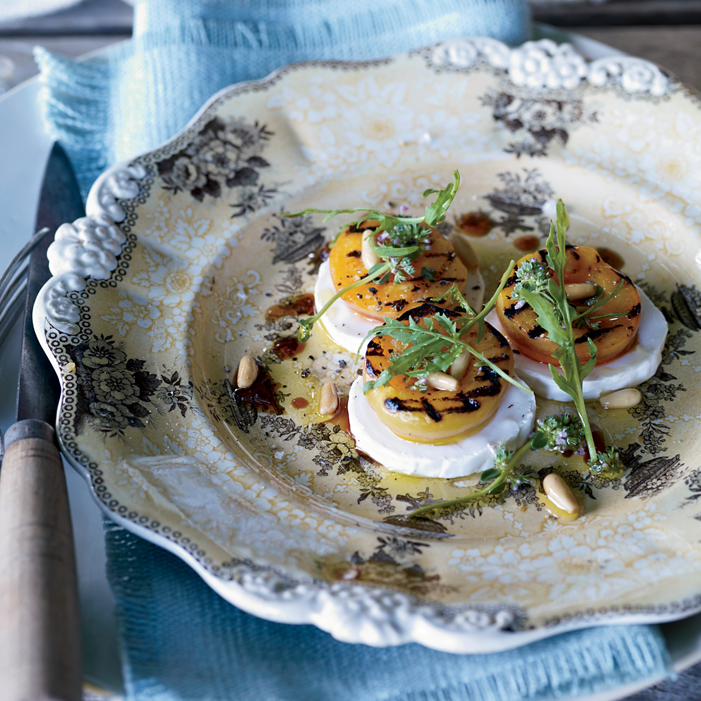

Daniel Humm's Grilled Apricot, Arugula, and Goat Cheese Salad

Description
This fun mix of salad and cheese course, this dish by Chef Daniel Humm of Eleven Madison Park is sure to impress guests, and get them very excited for what you make next.
Ingredients
- Six fresh apricots, halved and pitted
- Three tablespoons extra-virgin olive oil
- One teaspoon thyme leaves
- Salt and freshly ground pepper
- Two tablespoons pine nuts
- 1 1/2 teaspoons aged balsamic vinegar
- Four ounces arugula, stemmed
- One four ounce log fresh goat cheese, cut into 12 slices
Steps
- Light a grill
- In a medium bowl, toss apricots with one tablespoon of olive oil, the thyme, and season with salt and pepper. Let stand about 10 minutes
- Grill apricots over high heat for about 5 minutes, turning once, until lightly charred and softened
- In a small skillet, toast pine nuts over moderate heat, stirring, until golden
- Transfer nuts to a cutting board and finely chop
- Put pine nuts in medium bowl and whisk in vinegar and remaining olive oil
- Season with salt and pepper
- Add arugula and toss together
- Arrange goat cheese slices on plates
- Top slices with apricots and arugula salad
- Serve immediately